Guide
A Step by Step Guide to Using Parsley
Welcome to Parsley! We assume you are here because you have exported some data from a plate reader, and you are interested in extracting the data and converting it into a format suitable for downstream analysis. This Guide will take you through the steps of using Parsley to solve this problem.
- See the About tab for more on what a parser does and why you would use it.
- See the Help tab if you’re looking for troubleshooting tips or help on how to interpret the error messages.
There are three main steps to parsing plate reader data with Parsley using the first ‘Build Your Own Parser’ tab. First, you need to upload your experimental Raw Data file. Second, you will need to create and upload an accompanying Metadata file that contains all the extra information you will need to attach to your data for your downstream analysis. Third, you need to proceed through a guided series of Data Specification steps, to tell the app about your data (such as what type of data it is and where the relevant data cells are located within your Raw Data spreadsheet). These three steps will create a ‘parser function’ or ‘parser’ that the app uses to convert the Raw Data and Metadata into Parsed Data. The Parsed Data can then be downloaded as a CSV file. The parser function you have built can also be saved for use on further files of the same type, using the second ‘Use Saved Parser’ tab.
Navigate to the ‘Build Your Own Parser’ tab (left hand link in the top navigation bar) to get started.
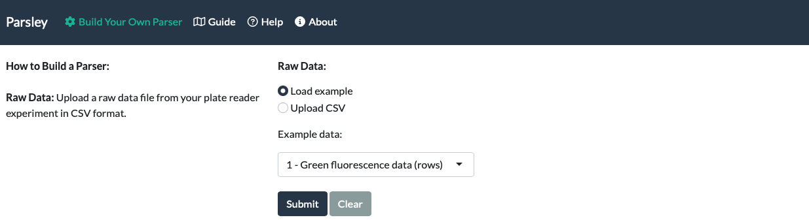
Standard Data
Example data:
To illustrate how Parsley works for the purposes of this guide, we will use a simplified version of the first example dataset provided with the app (‘Green fluorescence data (rows)’). Here, a dilution series of the green fluorescent small molecule fluorescein (11 dilutions) was prepared in a 96-well plate, with the highest concentration placed on the left (A1), the lowest on the right (A11) and with buffer blanks in column 12 (A12).
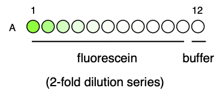
This plate was measured for fluorescence intensity in the green fluorescence channel (ex. 485/20, em: 535/25), which I have called the ‘GG2’ channel, in a Tecan Spark plate reader. The first reading was at gain 40, and the second at gain 50. The readings were therefore labelled ‘GG2_gain40’ and ‘GG2_gain50’, respectively.
The image below shows how such data might look in Excel after export from a plate reader: this is our Raw Data.
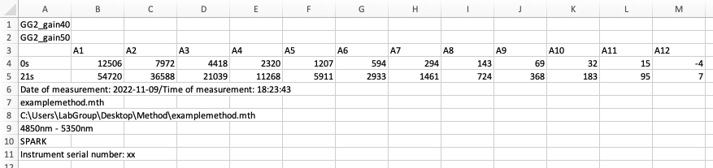
Raw Data
To start, upload your experimental Raw Data file. On the ‘Build Your Own Parser’ tab, you should see the following instructions at the top of the page:
Raw Data: Upload a raw data file from your plate reader experiment.
We recommend uploading CSV format files where possible. As most plate readers export files in Excel (.xlsx) format, these need to be converted (you can open them in Excel or similar and use ‘Save As..’). While Parsley can handle Excel files, importing data from Excel files can be slow and can cause issues that are solved by using CSV format.
To upload a file, select ‘Upload file’, find your Raw Data file, select a ‘File type’ from the dropdown menu, and click ‘Submit’. (Since v0.1.2, it is also possible to upload tab-separated value (tsv) files, as well as CSV files that use semi-colons (;) instead of commas (,) by selecting the appropriate delimeter.)
A successful upload will result in the name of your file appearing below the Submit button, and the entire Raw Data file contents appearing at the bottom of the page. Even if the file is very wide or long, you should be able to scroll to view the entire file.
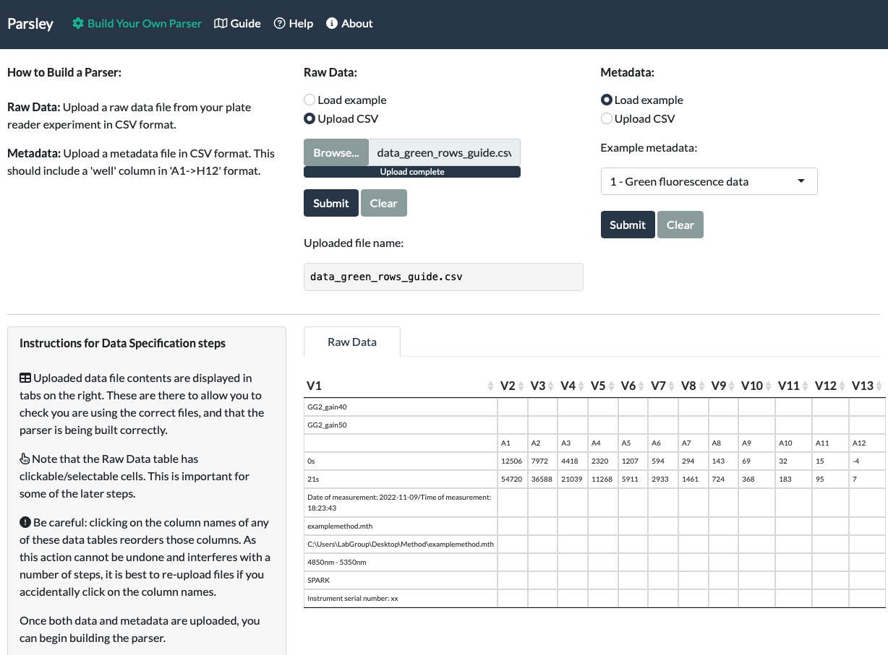
When we upload our fluorescein data, we can see that the correct file name appeared under ‘Uploaded file name’ and also that the entirety of the data is visible at the bottom of the page.
A few guidance notes will also appear:
Note that the Raw Data table has clickable/selectable cells. This is important for some of the later steps.
Be careful: clicking on the column names of any of these data tables reorders those columns. As this action cannot be undone and interferes with a number of steps, it is best to re-upload files if you accidentally click on the column names.
These notes highlight the fact that the Raw Data file is displayed in an interactive format that enables you to individually select or deselect cells within the data. This will be important later.
In addition, the displayed Raw Data table contains interactive column names that, when clicked, sorts those columns by their values. Do not click on these column names! This reordering cannot be undone. Unfortunately, there’s no mechanism within Shiny to remove this particular interactivity, so if the columns get reordered in this way, it is best to Clear and re-Submit the data, or to reload the app and start again.
Metadata
Once the Raw Data has been uploaded, follow the instructions to upload a Metadata file:
Metadata: Upload a metadata file. For tidy format metadata files, include a ‘well’ column in ‘A1->H12’ format. To skip metadata addition, choose ‘Skip Metadata’.
Metadata files are simple files you can create in Excel or a similar application, in which you add any and all variables necessary for your downstream data analysis. If you’re using an existing software package, the software should specify which variables are required in your parsed data.
Parsley accepts metadata in 2 formats: tidy format and matrix format. Tidy format is recommended for metadata.
Tidy format Metadata: There are few rules for how to create tidy Metadata files, but they are strict:
- Metadata files should be prepared in a ‘tidy data’ format. This means the data should be arranged in columns, where each column represents a variable and where the variable name for each column is located in the first row of that column.
- Metadata must contain a column called ‘well’ that contains entries in the format ‘A1’ to ‘H12’ to specify well positions in a 96-well plate. This is because ‘well’ is the column that will be used for joining the data to the metadata: without ‘well’ this joining action will fail. All other columns are optional and will depend on downstream requirements. For example, for plate reader calibration with FPCountR, the metadata requires at a minimum the additional columns: ‘instrument’, ‘channel_name’, ‘calibrant’, ‘replicate’, ‘mw_gmol1’, ‘dilution’ and ‘volume’.
- Variable names must be unique (no two columns should have the same name), and contain no spaces or symbols (except underscores, which are tolerated).
For example, the Metadata for our fluorescein dilution series might look like this (when assembled in Excel):
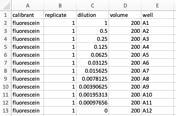
Matrix format Metadata: As of v0.2.0, Parsley also accepts matrix format metadata. To do this, we have adapted functions from another R package, plater, that was written specifically to allow metadata to be assembled ‘intuitively’, as you would when preparing a plate for an experiment.
- Matrix format metadata requires each variable being arranged in matrix format, ie. arranged like a multiwell plate. For a 96-well plate, this means the first column contains row names A-H, the first row contains column names 1-12. The name of the metadata variable should be provided in the top left corner cell, and the values of this variable arranged in each ‘well’ slot. Consecutive variables should be arranged below the first, with a 1 row gap between each matrix.
- Variable names must be unique (no two columns should have the same name), and contain no spaces or symbols (except underscores, which are tolerated).
Matrix-format metadata for the fluorescein dilution series would be arranged as follows:
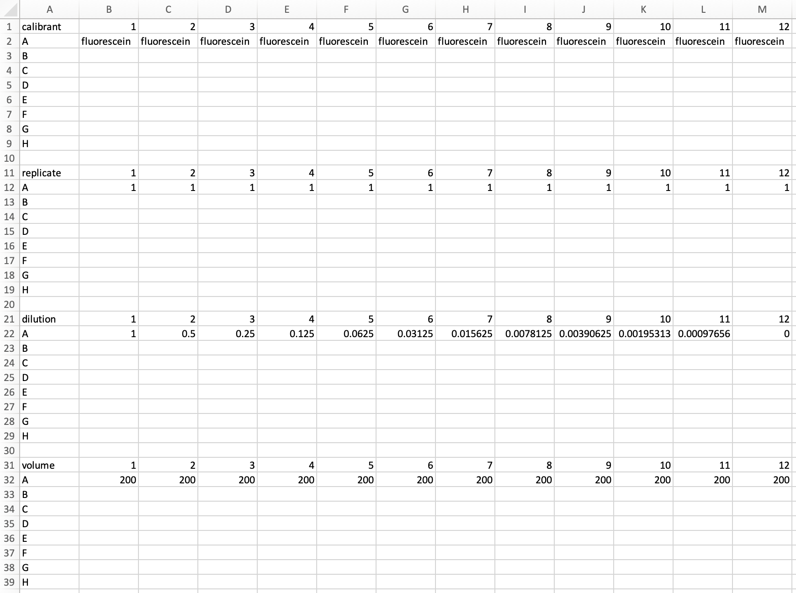
On saving this as a CSV and uploading it to Parsley, we should notice once again that the upload triggered the display the file name of the uploaded file below the Submit button, and the contents of that file at the bottom of the page. Unlike the Raw Data file, we might also notice that Metadata is not displayed in an interactive format.
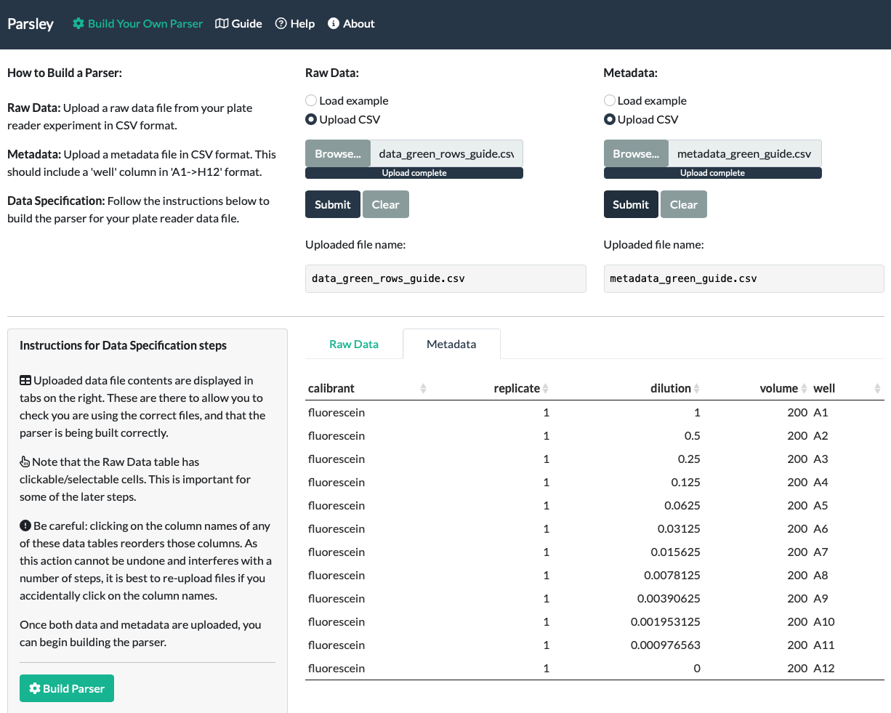
It is possible to skip this step, and to use Parsley to extract and tidy your data without joining it to metadata. Choose ‘Load example’, and select ‘Skip metadata’ from the dropdown. You should see the Metadata tab confirm that no metadata has been uploaded.
Data Specification
Once both data and metadata have been uploaded, a green ‘Build Parser’ button appears below the ‘Instructions for Data Specification’ section. Click the button.
Further instructions appear:
Proceed through the sections in order. Follow the instructions under each step, then click ‘Set’. Check the submitted values and their results with ‘View’ to toggle the ‘Data specifications’ tab (clicking once will take you to the ‘Data specifications’ tab, clicking again will return you to the Raw Data tab). When satisfied, ‘Lock’ the section to mark it as complete, before proceeding to the next step.
There are 7 steps in the Data Specification section. Each section must be completed in turn, and each has 3 buttons below it: ‘Set’, ‘View’ and ‘Lock’ (a lock icon). For a given step, once information has been entered, you must click the ‘Set’ button to confirm the entered information. If no error messages are received, this usually means the section has been completed correctly. Having said this, we’d recommend checking each step with ‘View’. Once satisfied, each section must be locked with the ‘Lock’ icon button to enable you to proceed to the next step.
Step 1: Data format
Step 1 enables the app to get a broad idea of the kind of data you want to parse.
Choose data type and format.
Data type: There are three data types.
- Standard: Single measurement for each well, or single measurement for a series of distinct measurement types (eg. OD600 followed by green fluorescence; or A280 followed by A340). Most absorbance or fluorescence measurements are ‘Standard’. If in doubt: if your data is not Spectrum data or Timecourse data, it is Standard data.
- Spectrum: Absorbance or fluorescence spectrum data, where a large number of measurements are taken for each well between a range of wavelengths.
- Timecourse: Timecourse/Time series/Kinetic data in which one, or a series of, measurement(s) are taken at regular intervals.
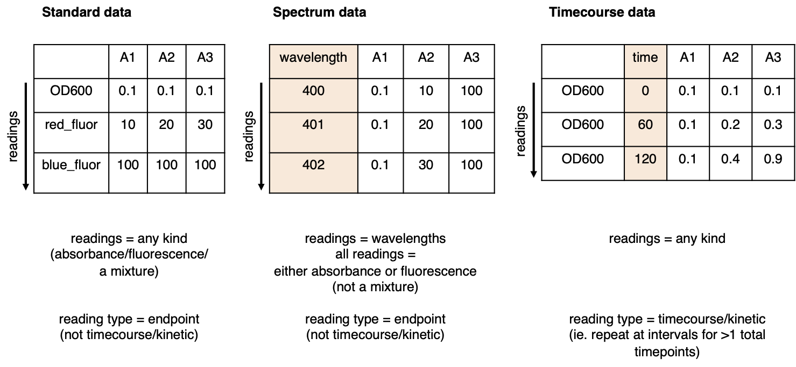
Data format: There are three data formats.
- Data in Rows (Wells in Columns) - Readings from consecutive measurement channels (eg. OD600, green fluorescence, etc) are arranged in rows. The columns represent different wells in the multiwell plate.
- Data in Columns (Wells in Rows) - Readings from consecutive measurement channels (eg. OD600, green fluorescence, etc) are arranged in columns. The rows represent different wells in the multiwell plate.
- Data in Matrix format - Data is arranged in one, or a series of, 8-by-12 grids.
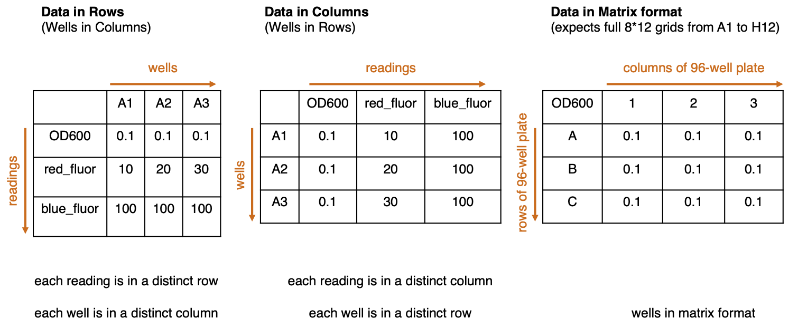
Select the Data type and Data format appropriate for your data and click Set.
In our fluorescein example, we choose Standard for the Data Type and Data in Rows for the Data Format, as the 1st row represents the 1st reading (a green fluorescence intensity reading at gain 40), and the 2nd row represents a 2nd reading (a green fluorescence intensity reading at gain 50).
When we click Set, a Data Specifications tab appears behind the Raw Data tab. The View button can be used to toggle between the Raw Data and Data Specifications tabs.
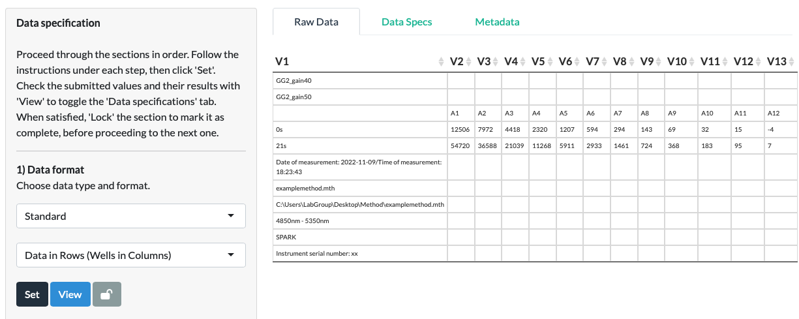
Clicking the View button or selecting the Data Specifications tab directly, we can see that the app feeds back to us on our earlier choices. The choices made at each subsequent step, and resultant intermediate data values, will also appear in this tab.
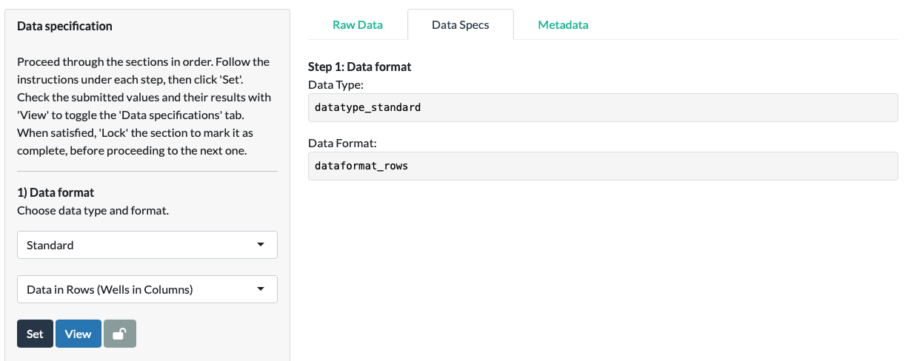
Use the View button to toggle back to the Raw Data tab.
Click the lock to confirm the values and continue to Step 2.
Step 2: Reading names
Step 2 allows the app to collect data about the number of readings used in your experiment, and their names.
Specify the number and names of all the readings taken.
Readings from a plate reader are typically absorbance or fluorescence measurements.
Enter the number of readings.
Enter the reading names. First, choose how to input them: they can either be selected from values of cells in the Raw Data (‘Select cells with reading names’), or entered manually (‘Enter reading names manually’). Follow the guidance on namings:
The reading names are the labels you want to give each reading. These will become column names in the parsed data. As such, it’s important that the names are unique (no duplicates), and that they do not contain spaces or punctuation, although underscores are OK.
For our fluorescein data, we select the cells corresponding to the two reading names: ‘GG2_gain40’ and ‘GG2_gain50’ (in the correct order first to last).
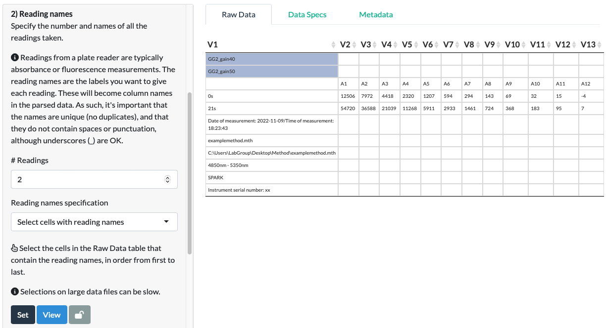
Click Set and View.
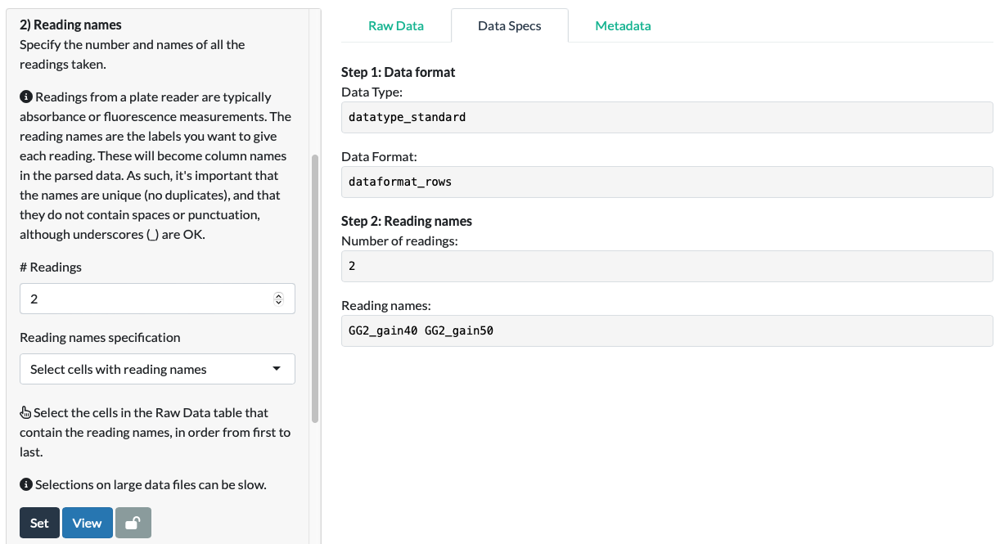
For our fluorescein data, we can see that the app has extracted the correct names in the correct order.
Click the lock to confirm the values and continue to Step 3.
Step 3: Data from first reading
Step 3 begins the process of data extraction.
To extract the data from your Raw Data file, the app needs to identify the precise location of the data within the file. We start by telling the app where to find the data for the first reading (Step 3) and then move on to enable it to find the ‘total data’ (the data for all the readings and timepoints; Step 4).
You should see the following instructions:
Select first and last cell from the first reading.
If data is in rows, both cells need to be in the same row. If data is in columns, both cells need to be in the same column. For matrix format data, select cells corresponding to wells A1 and H12.
In our fluorescein example, we select the first and last cell of the first reading (the green fluorescence reading at gain 40). As the first reading corresponds to the first row of data, we select the cells with the first and last data values in the top row. We do not select the leftmost cell as that is a timepoint. We do not attempt to select multiple rows, as these would correspond to multiple readings.
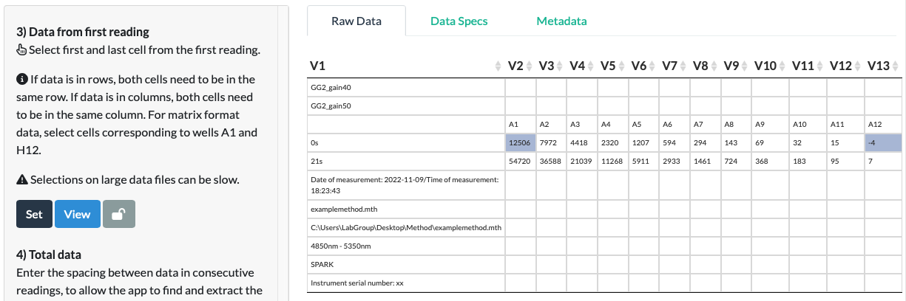
Selections on large data files can be slow.
Be patient! For large files (eg. spectra or timecourse data), the delay between a click and a cell turning blue can take a few seconds.
Click Set.
If you make a mistake at this step, an Error message will show. The most common mistake is selecting >2 wells, which happens if you don’t deselect the cells you selected in Step 2.
Click View.
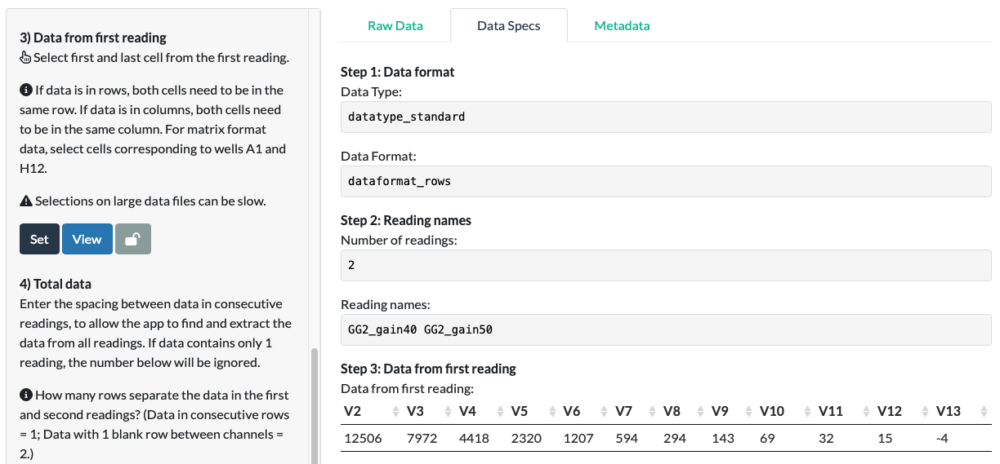
In our fluorescein example, we can see that the app has correctly extracted the data for the first fluorescence reading!
If this extracted data contained odd elements (empty cells, cells containing non-data elements), now would be the time to go back and correct it.
Click the lock to confirm the values and continue to Step 4.
Step 4: Total data
Step 4 continues the data extraction process started in Step 3.
Follow the instructions:
Enter the spacing between data in consecutive readings, to allow the app to find and extract the data from all readings.
In order to locate the cells containing the data from every single reading, the app uses two pieces of information: the information from Step 3 about the location of the first reading, and information from this Step about how far apart consecutive readings are located from each other. In some plate reader export files, readings are pasted in consecutive rows, but in others there may be gaps between readings.
How many rows separate the data in the first and second readings? (Data in consecutive rows = 1; Data with 1 blank row between channels = 2.)
For the purposes of this app, we define ‘spacing’ as ‘How many rows separate the data in the first and second readings?’ Where the readings are in consecutive rows, the 2nd reading is located in the row below the 1st reading, ie. in the row ‘1st reading + 1’. This is defined as a spacing of ‘1’. Where there is a gap of one blank row between readings, the 2nd reading would be in the row ‘1st reading + 2’, so spacing is ‘2’, and so on.
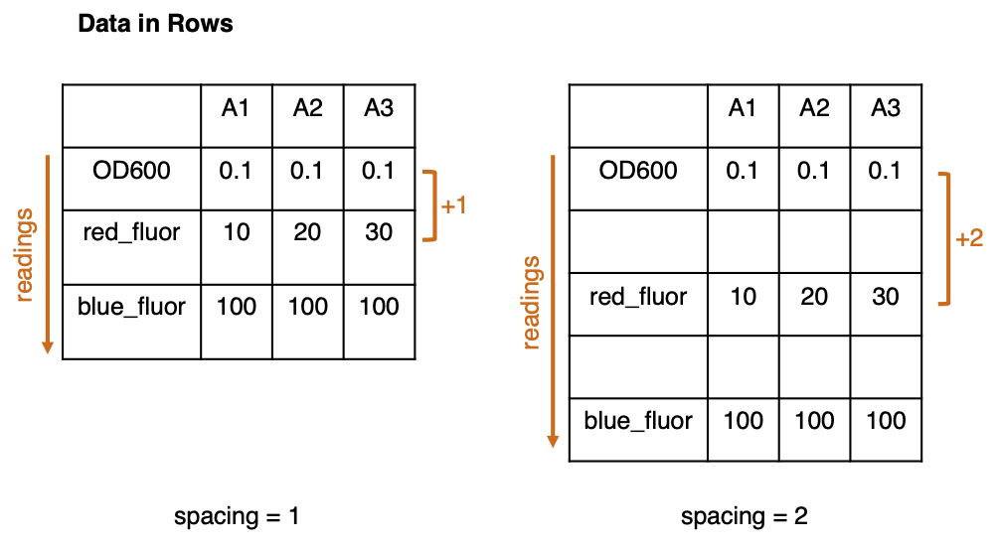
If data contains only 1 reading, the number below will be ignored.
If your data contains only 1 reading, you already have all the data! You can ‘skip’ this section by leaving in the default ‘1’ spacing value and clicking Set and Lock.
(In timecourse data, you will need to provide the number of rows that separate the first time point of the first reading with the first time point of the second reading.)
In the fluorescein example, we choose ‘1’ as the data for the 2nd reading is in the row directly below the first, so they are consecutive rows.
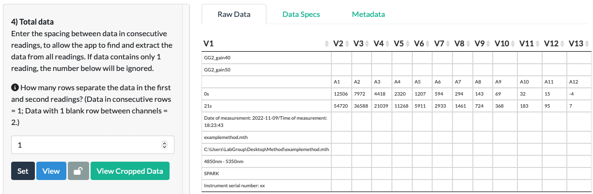
Click Set and a new tab called Cropped Data should appear behind the Raw Data and Data Spectifications tabs. Click View Cropped Data to view the Total Data as it has been ‘cropped’ out from the Raw Data file.
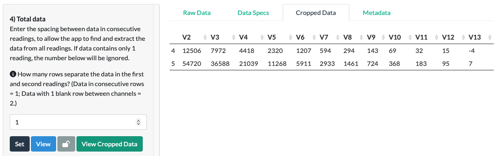
In the fluorescein example, we can see that the data extraction is correct and complete. All of the data has been extracted from the Raw Data file, and no empty or non-data cells remain in the Cropped Data.
Click the lock to confirm the values and continue to Step 5.
Step 5: Well numbering
Step 5 adds well numbers to your data to enable you to identify your samples within each reading. Well numbering also enables you to accurately join the Cropped Data with your uploaded Metadata.
Follow the instructions:
Select well orientation and starting well.
Here, the app wants to match each sample to a well ID. For common 96-well plate formats, enter the well orientation and the starting well to enable such matching. Well orientation is required to specify how the wells are ordered in the Raw Data. A Starting well is required as you may have taken data only from a subset of wells, so the first well may not be ‘A1’. Select both from the dropdown menus, and the app will work out the identity of all the wells in your Cropped Data.
Meaning of Well orientation options:
- ‘A1->A12’ means ‘A1’, ‘A2’, ‘A3’ … ‘A12’, ‘B1’, ‘B2’…
- ‘A1->H1’ means ‘A1’, ‘B1’, ‘C1’ … ‘H1’, ‘A2’, ‘B2’…
- ‘Custom’ means neither of the above (and will request that you select first and last wells of a row/column of cells that contains the well info).
Presets correspond to standard 96-well plates and assume no wells are missing. Where a different multiwell plate is used, or if wells are missing, choose ‘Custom’.
If there are wells missing from the expected list of wells, eg. if you only measured wells A1, A2, B1 and B2, the standard (A1->A12) orientation will not assign correct well naming for you as it assumes the presence of wells A3-A12 which you didn’t measure. Select ‘Custom’. The app will ask you to select cells within the Raw Data file that represent the well IDs.
In our fluorescein example, we know that the wells were A1 to A12 with no wells missing, so the starting well was ‘A1’ and the orientation was ‘A1->A12’.
Click Set and View.
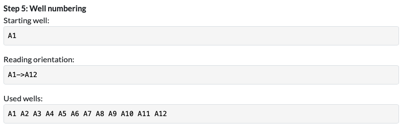
In our fluorescein example, we can see that it correctly worked out the wells used.
Click View Cropped Data.
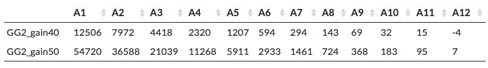
In our fluorescein example, we can see that the Cropped Data has now been labelled with the correct reading names and well names.
Click the lock to confirm and continue to Step 6.
Step 6: Join metadata
Step 6 allows you to check your Metadata.
Make sure a metadata file in the stated (tidy/matrix) format has been uploaded above (unless you selected to skip the metadata).
Tidy format metadata should be displayed in the Metadata tab with the column names in bold. Make sure the ‘well’ column of the file contains entries for each well in the Cropped Data (in exactly the same notation).
Matrix format metadata should be displayed in the Metadata tab with non-specific column names (e.g. V1, V2 or ‘…1’, ‘…2’). Each variable should be displayed as an 8-row by 12-column grid (for 96-well plates), or similarly for other plate sizes, with the variable name in the top left corner of the grid, and with consecutive variables entered below one another separated by a single blank row.
Click View Metadata to check the Metadata is correct. Further guidance is provided in the Metadata section of this Guide. Metadata can be cleared and re-uploaded if necessary using the section on the top right.
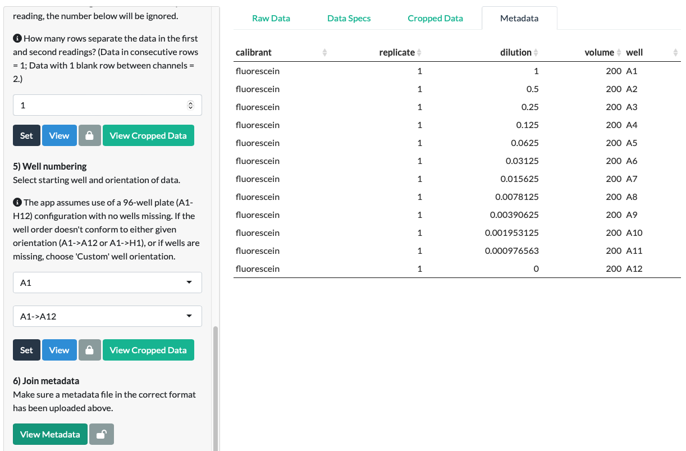
In our fluorescein example, we can see that the uploaded Metadata is in the correct format. (Note that the metadata here represents the entire fluorescein dilution (which was conducted in duplicate in rows A and B), even though we only used row A in the examples above for clarity.)
Click the lock to confirm the metadata and continue to Step 7.
Step 7: Parse data
Step 7 completes the data parsing by joining the Cropped Data with the Metadata.
Click the Parse Data button. A Parsed Data tab should appear.
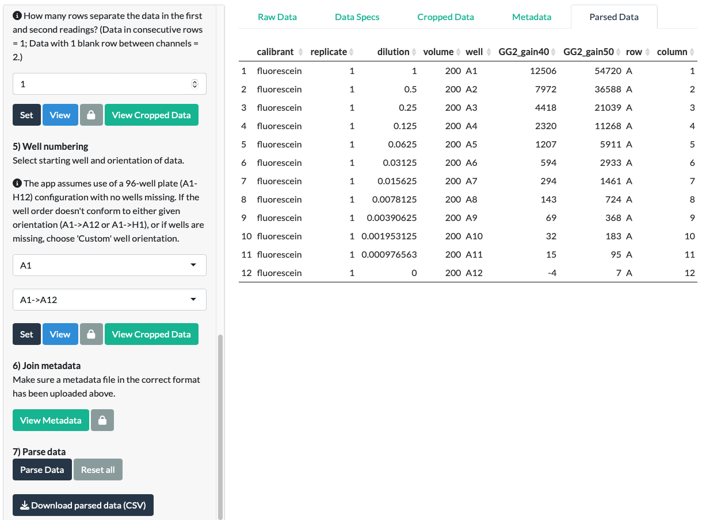
In our fluorescein example, we can see that it correctly joined the metadata to the data.
A ‘Download parsed data’ button should appear. Download the CSV file.
Spectrum data
Spectrum Data is a special case of Standard Data in which (i) all readings are either absorbance or fluorescence readings, (ii) the readings differ only by the wavelength at which the reading is taken, and (iii) there are typically hundreds of readings per experiment.
Most of the steps for parsing Spectrum Data are identical to those for Standard Data and we refer users to the above sections for the basic explanations of all steps.
Example data:
For this section, we will use the 4th example dataset provided with the app (‘Absorbance spectrum data (cols)’). Here, a dilution series of the green fluorescent small molecule fluorescein (11 dilutions) was prepared in a 96-well plate, with the highest concentration placed on the left (A1), the lowest on the right (A11) and with buffer blanks in column 12 (A12).
An absorbance spectrum scan was carried out on this plate in a Tecan Spark plate reader (wavelengths 200-800nm, with an interval of 1nm).
The one place where Spectrum Data differs from Standard Data is in Step 2. Instead of asking users to manually select or input hundreds of reading names corresponding to all the wavelengths used in a spectral scan, the app works out these numbers based on a small number of inputs: the minimum and maximum wavelengths used and the interval (ie. what is the difference, in nm, between the first and second wavelengths). As above, these can be checked with the View button.
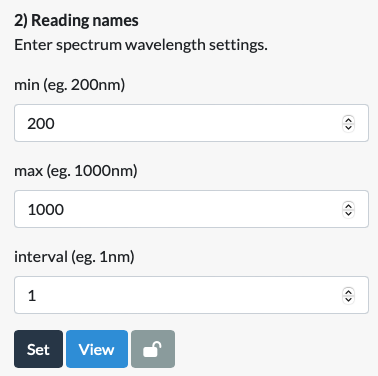
Step 3: Data from first reading
As the wavelengths in Spectrum Data are effectively the readings, it is important to remember that the first reading in spectrum data is the lowest measured wavelength.
In our fluorescein example, this means that in Step 3, the appropriate choice of cells is the first and last cell from the 200nm wavelength reading. (Note that fact that the orientation of the selections here differs from the one in Standard Data’s Step 2 above not because the data type is Spectrum Data, but because the data here is in column format where each reading is a separate column. In the example Standard Data above, the data is in row format, where each reading is a separate row.)
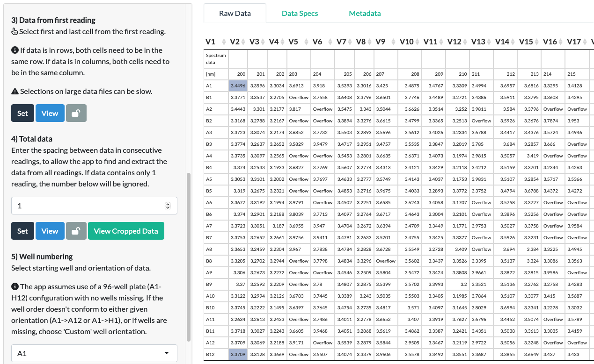
Timecourse data
Timecourse Data is similar to Standard Data but somewhat more complicated, as each reading is carried out multiple times. Most of the steps for parsing Timecourse Data are identical to those for Standard Data and we refer users to the above sections for the basic explanations of all steps.
Example data:
For this section, we will use a simplified version of the 6th example dataset provided with the app (‘Timecourse data (rows)’). In this experiment, an inducer titration of an mCherry expression vector was carried out. We have truncated the data to only include row B, in which three inducer concentrations were tested, each in triplicate (B2-B4, B5-B7, B8-B10) next to a media blank (B11).
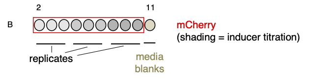
A timecourse experiment was carried out on this plate in a Tecan Spark plate reader, with three readings (OD600, red fluorescence and blue fluorescence) taken every 30 minutes for a total duration of 16 hours.
Unlike for other data types, the app contains an extra section for Timecourse data that is positioned after Step 2 in which Readings are specified. This step will create a numerical list of timepoints used in your experiment. This can be achieved in one of two ways: by selection of cells specifying each timepoint directly, or by manually specifying a small set of parameters, from which the app calculates the list for you.
To specify timepoint parameters for a calculation of timepoints, select ‘Enter timecourse settings’ from the dropdown menu.
This step aims to work out the time points in your experiment using a small set of inputs. You are not required to select or list every timepoint by hand, the app will calculate them for you instead. This is partly because there may be many timepoints, and partly because many plate readers export timepoints in a variety of often unhelpful units (eg. seconds for a day-long timecourse), odd formats (mixing numbers and letters in timepoint cells, eg.’10 min’) or with excessive precision (eg. such that the ‘30 minute’ timepoint is listed as having been taken at ‘32 min’ for one reading and ‘34 min’ for the next reading, frustrating downstream analyses).
The basic inputs required to calculate timepoints in Parsley include the first time point, the duration of the time course and the interval (the difference between the first and second time points). These should be easy to obtain from metadata recorded by the software or the user during the experiment.
For the mCherry timecourse example, we input a 0 min first timepoint, a 960 min (16h x 60 = 960min) duration and a 30 min interval.
Parsley will attempt to use this information to work out the timepoints in our experiment. It might do this by starting from 0 and including 0, 30, 60, … 930 and 960 minutes. If it did this, we would run into problems, since the final timepoint in our experiment is actually at 930 minutes! This is because in our instrument, readings are only taken at the beginning of each interval. So a timecourse with parameters - first timepoint 0min / duration 60min /interval 30min - will have only 2 timepoints (at 0 and 30min), in contrast to the 3 you might expect (at 0, 30 and 60 min).
Parsley includes a 4th input here to deal with this problem: ‘Number of timepoints expected’. Parsley will work out the expected timepoints using the ‘intuitive’ logic that readings are taken at every possible opportunity between the first timepoint and the timecourse duration, but it will truncate the timepoint list based on the user expectation, if the user expectation is lower than the naive Parsley calculation.
It is therefore important to work out the precise number of timepoints in your data independently. An easy way to do this if you didn’t specify it in your method is to select all the timepoints of one of the readings in Excel, and count the number of rows they take up (assuming the data is in row format).
For the mCherry timecourse example, we input ‘32’ expected timepoints, as we know the Tecan Spark takes readings at the beginning of each interval, so taking readings at 30min intervals across a 16h experiment will result in 32 intervals, so 32 timepoints.
On clicking Set, we are presented with the following Warning:
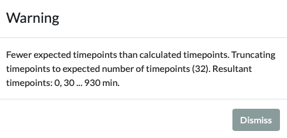
Note that this is just a warning - not an error. It does not prevent you proceeding or require a change in your inputs. Its presence is there to inform you that there was a mismatch between the ‘intuitive’ calculation that the list of timepoints must be ‘0, 30, … 930, 960min’ (ie. that the last timepoint is at 16h), and the expected timepoint number of 32, which suggests that if the first timepoint is 0min, the last must be at 930min, making the timepoint list ‘0, 30, … 930’. In this case, the latter is correct, so we can Dismiss the notification and proceed. Had there not been a ‘Number of timepoints expected’ input, or had we entered ‘33’, Parsley would have concluded that the data contains a final timepoint at 960 minutes. As this reading doesn’t exist in our data, this would have led to an error or crash in the later steps.
Click View to double check the timepoints Parsley has calculated are correct.
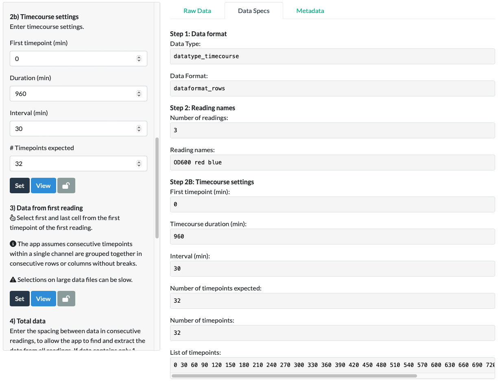
Note that as of v0.2.0, there is no longer an assumption that the units of timecourse will be specified in minutes. The units are not specified by the app, do not need to be specified by the user, and make no difference to the parsing process.
To select cells with numerical timepoint information, select ‘Select cells with timepoints’ from the dropdown menu.
As for Step 2 (Reading names), select the two cells corresponding to the first and last timepoints in the data (two cells in a row for column data, and two cells in the same column for row data). The app will extract the values of each cell between the first and last cell selected, and turn these into a list of timepoints. While the app doesn’t check for this, as it doesn’t affect parsing, we recommend that this function is only used on cells that contain strictly numerical data (eg. “10”) rather than a mixture of numbers and characters (eg. “10 min”), as this will help in downstream analyses.
Step3: Data from first reading
For Timecourse Data, Step 3 is similar to Standard Data, with the important note that the cells for selection need to be the first timepoint of the first reading, and that Parsley assumes that consecutive timepoints of the same reading are grouped together in rows/columns without breaks. This allows you to input the location of the first timepoint of the first reading and for Parsley to extrapolate the location of all timepoints from the first reading.
For our mCherry example, we select the first and last cells corresponding to the first (0 min) timepoint of the first reading (OD600).
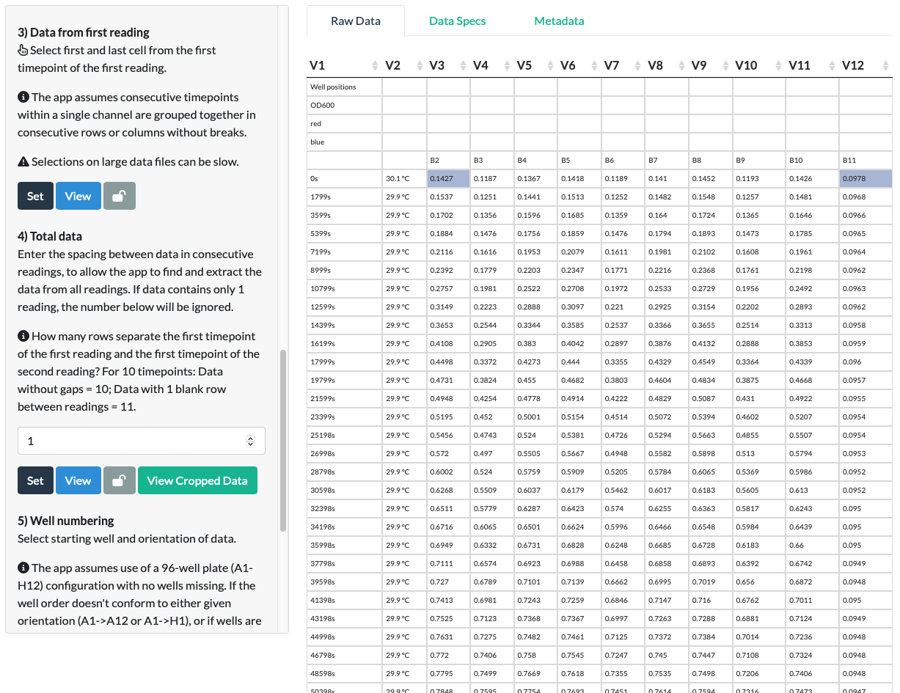
On clicking Set and View, we can see that the app has correctly extracted all the data from the first reading (all the OD600 data).
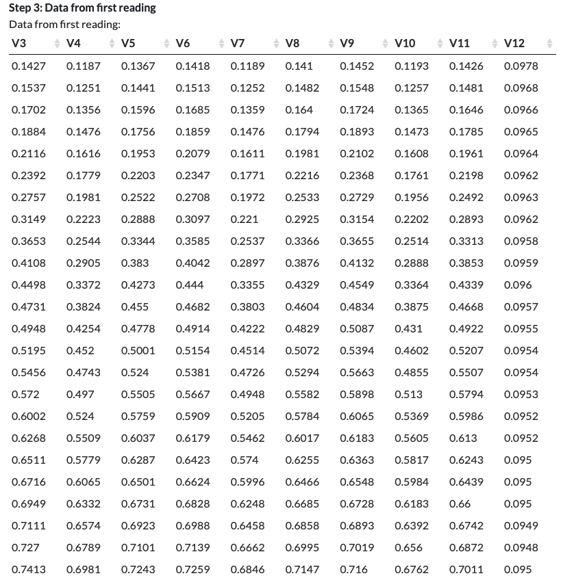
As Step 4 requests spacing information between consecutive readings, it is important to remember that for timecourse data, the spacing will typically correspond to the number of timepoints.
For our mCherry example, there are no gaps between the last row of the OD600 readings and the first row of the red fluorescence readings. However, we don’t input ‘1’ here, we input ‘32’, since 32 rows separate the first timepoint of the first reading and the first timepoint of the second reading.
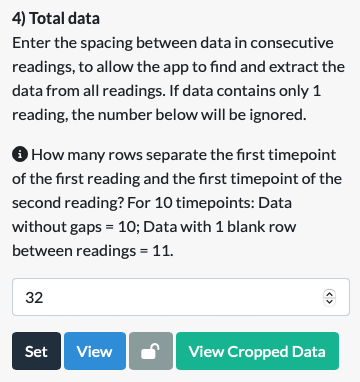
Clicking Set and View Cropped Data, we can see that the table includes a ‘time’ column.
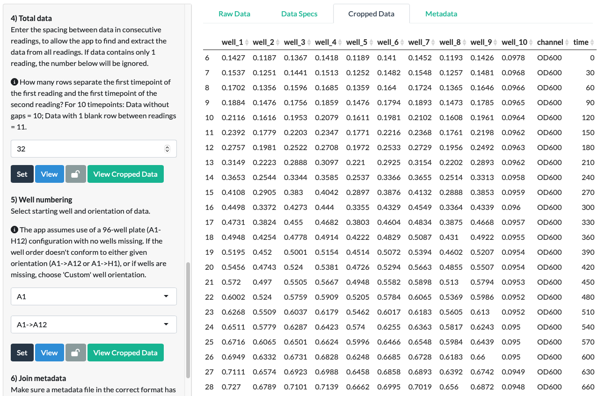
Scrolling down to the boundary between two of the readings, we can verify that Parsley calculated the spacing correctly, as there is a clear distinction between values labelled as OD600 readings and those labelled as red fluorescence readings, as expected.
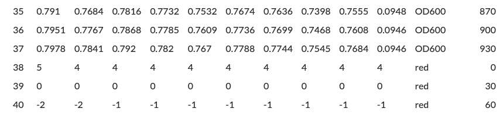
Saving and Reusing Parser Functions
On completion of a parser function with the ‘Build Your Own Parser’ tab, a ‘Save Parser’ button will be revealed. Clicking it will assemble all the details you have just specified your data and metadata into a function, which can be used immediately to parse further files, or be downloaded for later use.
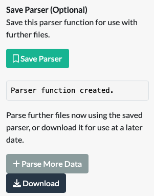
If you intend to use the saved parser in the current app session, there is no need to download it. Simply click on ‘Parse More Data’ which will take you to the second ‘Use Saved Parser’ tab.
If you want to use the parser for further files at a later date, download it. This will download a .RDS file. This is an R data file that is essentially a list of the data specifications in a format that Parsley will recognise when it is uploaded later.
Navigate to the ‘Use Saved Parser’ tab.
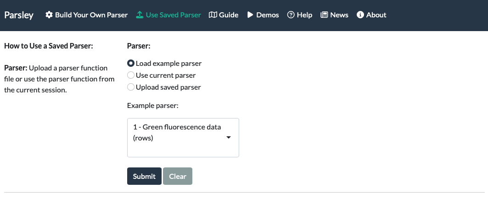
First, load a saved parser. If you have just made one on the first tab, select ‘Use current parser’ and Submit. If you saved one at an earlier date, select ‘Upload saved parser’ and upload the .RDS file you downloaded earlier.
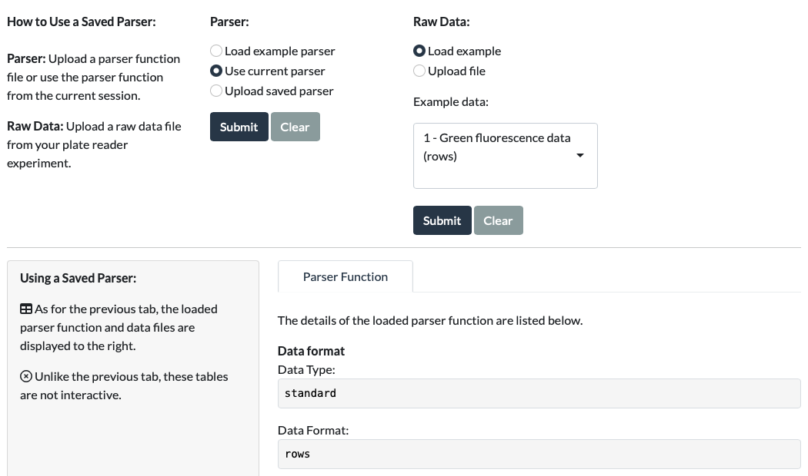
Once the parser function has been uploaded, simply load a new Raw Data file and Metadata file as you would in the first tab, and select Run Parser. This should reveal the Parsed Data and the Download CSV button. (The Cropped Data tab can be checked in case the Parsed Data doesn’t look right.)
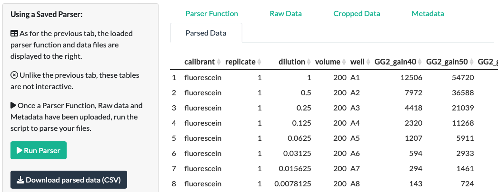
A note on making parser functions that work for multiple files
Before saving parser functions for reuse, it’s worth considering how these parsers work. In basic terms, a parser function is a series of instructions for about how to turn a given Raw Data file into the correct format, with some basic metadata (before you even join the extra Metadata file).
Data: Parsley extracts the numerical data itself purely with positional information from the file itself. This means that a parser function will only work on subsequent Raw Datafiles that contain data in the exact position as the original Raw Datafile.
Basic metadata: The basic metadata that Parsley requires from the Raw Datafile itself includes the reading names, timepoints (if applicable) and well numbering information. As plate readers export Raw Datafiles that may or may not include this information, there are two ways to specify this information in Parsley: data may be selected (grabbed from a specific location in the file) or fixed (manually entered or calculated). If you directed the app to locations in the data to find information (selected data), it will be set up to do the same for further files and will be able to handle differences between data files, so long as the updated information is recorded in the same positions as in the first file. However, if you manually entered or calculated certain information (fixed data), it will be programmed to always use those manually entered or calculated values for all subsequent files.
Helpfully, when a parser is uploaded, you can view its details in the Parser Function tab to check that it will work for your data files.
Let’s take an example. In the first example parser (Load Example Parser > 1 Green fluorescence data (rows)) that was made with the first example dataset (1 - Green fluorescence data (rows)), reading names were specified by selecting the positions in the Raw Data that contained that information: i.e., from the first 9 rows of the first column of the data. This is indicated in the Parser Function tab, where the Reading name specification is set to selected, and the indices of the Reading Names are specified in a table:
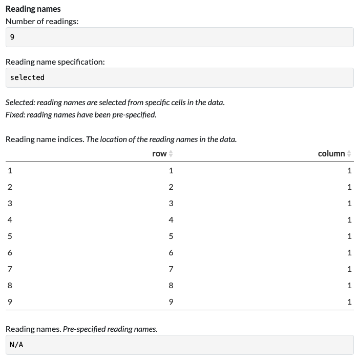
Therefore, for each new file that is parsed with this parser, the channel names will be grabbed from the cells at those same positions, making it possible to use on data with alternative channel names.
In contrast, the well names were calculated from well orientation and starting well information, ie. the well data is fixed as ‘A1, A2 …. B12’ for all data processed with that parser. This is also indicated on the Parser Function tab, where Well specification is set to fixed, and the Used Wells are indicated in full:
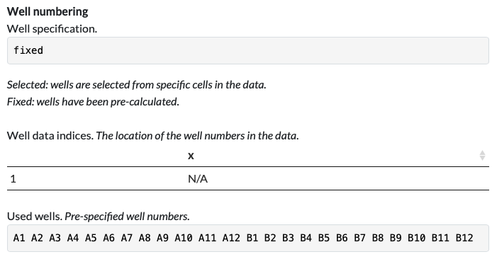
So with this parser, it is assumed that all subsequent data files will use the same well numbering.